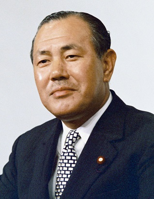
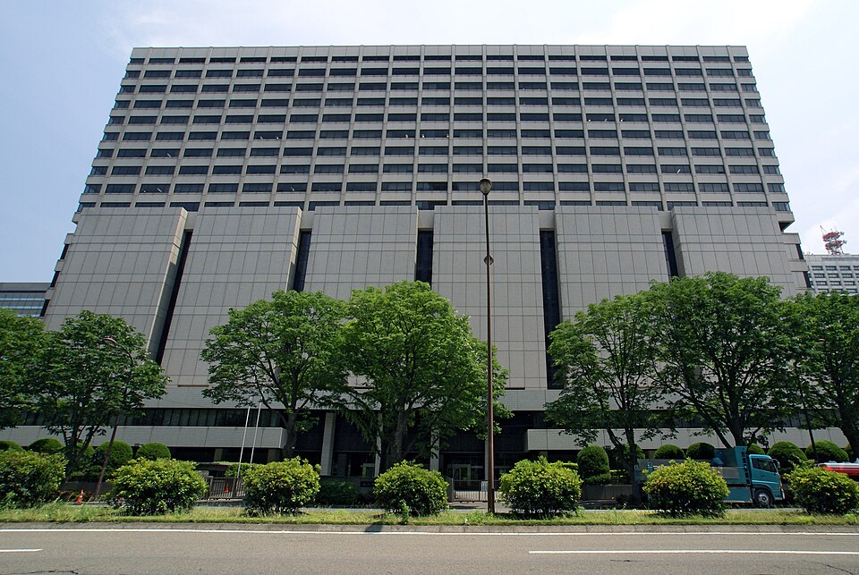
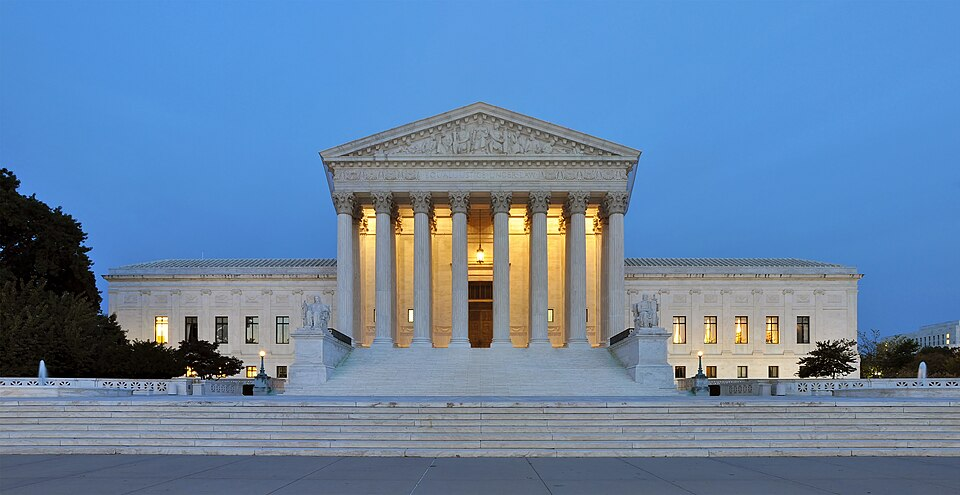
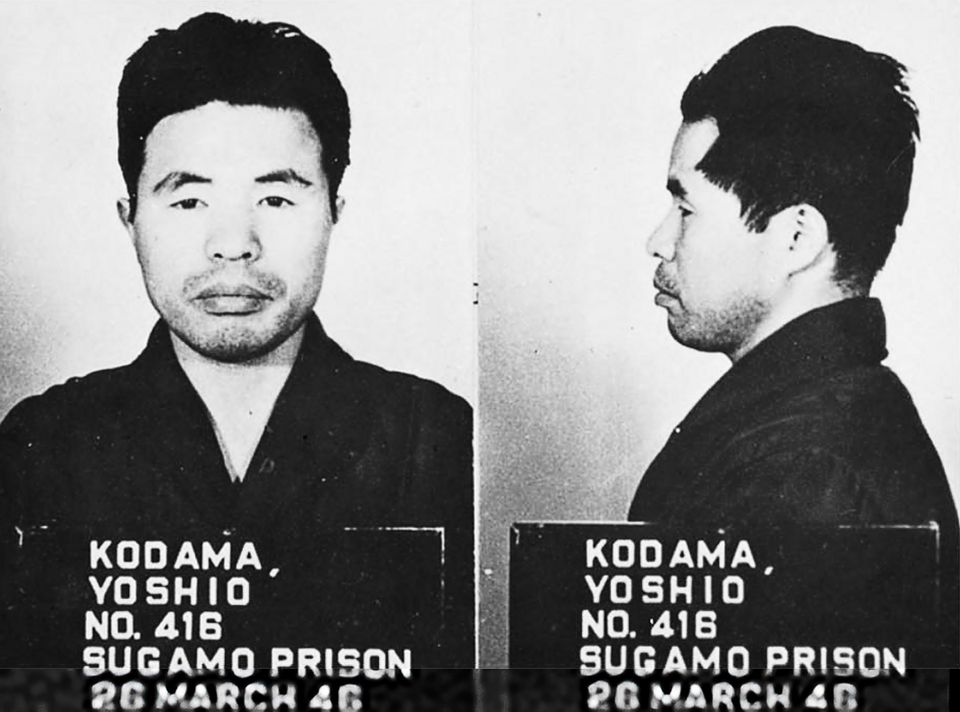
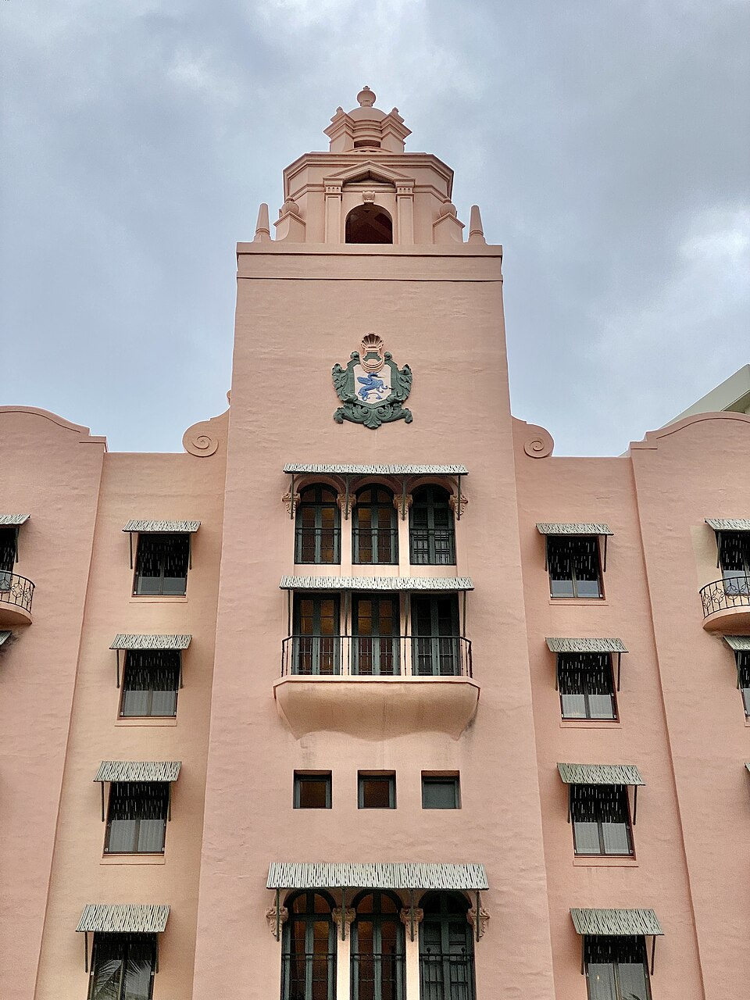

田中角栄
たなか・かくえい
内閣総理大臣・衆議院議員
役割：全日空の機種選定への働きかけと5億円受領を認定された
その後：一審懲役4年・追徴金5億円。死亡により公訴棄却1
1970年代前半〜1995年
ロッキード社は全日空へのL-1011トライスター販売を進めるため、丸紅幹部、児玉誉士夫らを介して日本側の政治家・有力者に資金を供与した。1
丸紅ルートでは、東京地裁が田中角栄について、全日空にL-1011を選定させる働きかけの対価として計5億円を受領したと認定した。1
米国議会調査を起点に日本で捜査・裁判が進み、田中の死亡による公訴棄却を経て、1995年の最高裁大法廷判決が首相の行政指揮権限と職務関連性を判断した。1

ロッキード事件は、ロッキード社の大型旅客機L-1011トライスターの日本販売をめぐる販売工作と、日本の政界、財界。航空業界の関係が結び付いた事件である。ロッキード社は全日空への売り込みでダグラス社のDC-10やボーイング社の747と競争していた。全日空は1972年8月に東京・大阪証券取引所の市場第一部に上場し、1973年12月にL-1011を導入した。1974年3月10日には東京―沖縄線で運航を開始した。機種選定は企業の購入判断に加え、当時の航空行政と運輸省との関係の中で進められた。123
東京地裁判決によれば、1972年8月23日、丸紅側の檜山広らは田中角栄邸を訪ね。全日空にL-1011を採用させるための働きかけを依頼した。裁判所は、田中が内閣総理大臣として運輸大臣らに働きかける職務権限を有していたと判断した。前日の段階では、丸紅幹部の大久保利春がロッキード社側と協議し、田中への協力依頼が成功したときに5億円を支払うことを承認させたと認定された。14
判決は、檜山が丸紅社長として売り込みの最終段階を意識し、田中のような実力者に頼むことを提案した経緯を記録している。政治家に依頼する発想は、通常の販売代理活動だけでは全日空の選定を確実にできないという丸紅側の認識から出ていた。ロッキード社側も、丸紅側に総理への依頼を求めた。誰が依頼を決め、誰が金額を確認し、誰が交付を実行するかが。商談の中で役割分担された。1
昭和47年8月21日のこと、前もってコーチャンとその日に会う約束があったように思うが、同人が訪ねて来たので2人で社長室応接室で全日空に対するトライスターの売込方法について話合った。そのときコーチャンは、私同様全日空が果してトライスターを買ってくれるか非常に心配している模様で、同人から「大久保氏は有能な方で非常によくやってくれているが、全日空への売込は楽観を許さない情勢にあり、いまひとつ強力な売込工作が必要であると思う。なんとかならないものか。」といった話が出た。それで私はトライスターの売込は時期的に山場にきており、ことは極めて重大であると話したうえ、「おっしゃるように貴社にとっても今度のトライスター問題は極めて重大であって、今や最終段階にきているから、田中総理のような実力者に頼んで側面から全日空に導入させるよう働きかけてもらったらどうだろう。ともかく早く決着をつけないと時期を逸してしまうから、すぐ手を打つことが必要だと思う。」旨話した。コーチャンは「総理に頼む方がもっとも強力であるので、ぜひそのようにしよう。しかし私が総理に頼みには行けないので是非あなたが行ってくれ。今度の件は、貴社にとっても重大な問題だし、タイミングを逸すると売込ができなくなるから、早急に総理に会って頼んでほしい。」と言った。
意味：通常の販売競争ではなく、首相への政治的働きかけを「強力な売込工作」と位置づけていたことが示される。
一審判決は、1973年8月10日以降、田中側に4回。合計5億円が渡ったと認定した。丸紅側では檜山が大久保と伊藤宏に実行を指示し、田中側では秘書官の榎本敏夫が授受の日時と場所をめぐる争点の中心となった。田中側は5億円の受領を否認し、榎本にはアリバイがあると主張した。検察側は丸紅幹部らの供述、授受の状況、首相の職務権限を組み合わせて請託と賄賂の因果関係を立証した。15
裁判では、金銭が田中側に届いたかだけでなく、丸紅側の誰がロッキード社に支払いを求めたか、田中の働きかけが何を意味したか。供述調書をどの範囲で信用できるかが争われた。1981年10月には榎本三恵子が公判で証言した。証言は、田中側のアリバイをめぐる法廷の構図を変えたと報じられた。人の記憶と関係者の供述が、長い裁判の立証を支えた。6
別系統では、児玉誉士夫がロッキード社の日本側秘密代理人とされた。1976年5月24日の国会答弁では、児玉について、クラッターからロッキード社のための支払いとして現金合計4億4,000万円を受領したとの公訴事実が説明された。児玉ルートは、旅客機だけでなく対潜哨戒機P-3Cなど防衛関連機材の売り込み工作との関係も捜査対象になった。児玉は1984年1月17日に死亡し、刑事裁判は判決に至らなかった。786
米国議会記録は、児玉をロッキード社の秘密代理人として説明し、日本の政治家や有力者への資金供与を問題にした。一方で、報道や捜査関係者の説明に含まれる約21億円が、誰にどのように配分されたかは確定判決で一括して認定されていない。児玉と右翼・反共勢力、CIAとの関係についても、資料ごとに性質が異なるため。指摘と疑惑を刑事判決の事実と区別する。910
事件の海外側の発端は、米国上院外交委員会多国籍企業小委員会などによる外国支払いの調査だった。1975年にロッキード社の支払いが調べられ、1976年2月4日には米国議会で日本に伝わる形で問題が表面化した。米国下院記録には、日本での秘密支払いの総額12百万ドルが記載された。米国資料が示したのは支払いの構造であり、日本側で誰が最終的に受け取ったかは国内の捜査と裁判で確認されることになった。11912
東京地検特捜部は1976年2月24日に捜査本部を設置した。1976年5月の国会答弁時点で、検事28人、検察事務官60人が専従し。関係者180人以上を取り調べていた。国会では米国資料の公開方法、外交関係、国政調査権。刑事捜査との関係が論じられた。三木武夫内閣は捜査への政治介入を否定し、児玉ルートを含む解明の継続を表明した。71314
ロッキード事件が起こったとき、私はその真相を明らかにしなければ、日本の民主主義は、大きく傷つけられることと考えました。そこで私は、国会の決議を受けてフォード大統領に対して、真相の解明の協力を要請いたしました。その書簡の中で、「私は、日本の民主政治は、本件の解明の試練に耐え得る力を有していることを確信している。われわれは、真実を究明する勇気と、その結果に直面していく自信を持っている。」と、こう述べました。それ以来、私は日本の民主政治のため、この災いを転じて福となすことができる、という確信のもとに対処してまいりました。ロッキード事件の解明に当たって、私が厳重に守ってきた方針は、捜査当局に対し、私も法務大臣も政治介入は一切行わないということであります。今後ともこの方針は貫いてまいります。検察当局によるロッキード事件の真相解明は、丸紅と全日空の二つのルートについては、ほぼ終結に達しつつありますが、なおいわゆる児玉ルートが残されており、現在検察当局はその解明に全力を挙げております。この三ルートの法律的解明がすべて終わった時点において、私は検察当局から事件の全容について報告を受け、それに基づいて、国会に対して政府の報告を行う所存であります。ただし、児玉ルートの解明に相当の時間を要する場合には、適当な時期に中間報告をいたしたいと存じます。さらに、ロッキード事件にかかわる政治的、道義的責任の問題につきましては、国会の国政調査権に基づく御調査に対し、資料の提供等最善の協力を惜しまない方針であります。ロッキード事件のような不祥事件がもし再び繰り返されるようなことがあれば、日本の民主政治が重大な危機に瀕することは明らかであります。
意味：政権側が、捜査への政治介入を否定しつつ、児玉ルートと政治的・道義的責任の解明を継続すると表明している。
1976年7月27日に田中角栄が逮捕され、8月16日に受託収賄罪・外国為替及び外国貿易管理法違反で起訴された。1977年1月から東京地裁で丸紅ルートの公判が始まり、丸紅、全日空。児玉・小佐野の各ルートに分かれて審理が進んだ。ロッキード社のコーチャン、クッター、エリオットら米国人関係者は日本で刑事訴追されず。嘱託証人尋問調書が作成された。証拠能力、任意性、反対尋問権が後の裁判の中心的な争点になった。515
1983年10月12日、東京地裁は田中に懲役4年と追徴金5億円を言い渡した。東京高裁は1987年7月29日に控訴を棄却した。田中は上告中の1993年12月16日に死亡し、最高裁では公訴棄却となったため、田中本人の有罪判決は確定していない。丸紅側幹部や小佐野、全日空ルートの関係者には個別に有罪判決が示された。116
1995年2月22日、最高裁大法廷はロッキード事件丸紅ルートについて、内閣総理大臣は少なくとも内閣の明示の意思に反しない限り、行政各部に対して所掌事務を一定の方向で処理するよう指導。助言等の指示を与える権限を有し得ると判断した。全日空への機種選定の働きかけが職務権限に属し得るかが、受託収賄罪との関係で判断された。判決は、田中の死亡により公訴を棄却しながら、職務権限と請託の法的整理を残した。164
一連の裁判記録は、販売会社側で依頼を決めた檜山、交渉と資金供与に動いた大久保と伊藤、政治家側で依頼を受けた田中、受け渡しの争点になった榎本、米国側で資金を管理した関係者、調査を進めた米国議会と日本の検察を。別々の手続で扱った。誰か一人の行為だけではなく、販売目標、代理店、政治的働きかけ、行政権限。捜査協力が重なった経緯として記録されている。1
しかして、その請託・賄賂の趣旨について検討すると、当時対外経済政策の実施面での重要な1環をなしていた高金額の大型航空機輸入の事態を利用し、これより生ずる内外私企業の利益を原資とし、前記のとおり航空行政の適正な運営を担保すべき運輸大臣の認可権限の行使を直接間接に利権化することを意味し、わが国対外経済政策ないし航空行政の公正な運営、さらにこれが内閣総理大臣の行為にかかるものであることから国政全般に対する国民の信頼に背くこと極めて大なるものがある。 以上の諸点に鑑み、本件においてこれに関与した者の行為責任を中心とする犯情の観点からするならば、その刑責は、他に特段の事情がない限り受託収賄・贈賄罪の定める最高の段階に属するものであるというべきである。 このことを量刑判断の中心に据えたうえ、各被告人の有する諸般の量刑要因について総合的に検討し、個別的な刑責を明らかにしていくこととする。 1 被告人田中角栄について 被告人田中は昭和47年7月以降同49年12月まで内閣総理大臣の地位にあり、その間に本件受託収賄罪を犯したものであって、前述のとおり、その公務員としての最高の地位、権限に対して要求される職務執行の公正さの程度が極めて高く、したがって国民の信頼を甚だしく失墜し、社会に及ぼした病理的影響の大きさにはかり知れないものがあること、授受にかかる金額が贈収賄事件において想定される最高値の範囲に属すること、請託、賄賂の趣旨が対外経済政策関連の大型航空機輸入やわが国航空行政を直接、間接に利権化することを意味し、国民の公務の公正さに対する信頼に背くことにおいて極めて重大なものがあること等の諸点に関する最高の非難をまさに直接にこうむらなければならない。
意味：事件を単なる贈収賄ではなく、航空行政と国民の信頼を損なう「利権化」と評価している。




| 田中角栄邸跡・田中事務所周辺 | 東京都千代田区永田町周辺 | 丸紅側が田中に請託した場所として判決に登場 | 1 |
| 砂防会館 | 東京都千代田区平河町2-7-5 | 田中派・政治資金の拠点として事件関連資料に登場 | 29 |
| 丸紅本社 | 東京都千代田区大手町1-4-2 | ロッキード社の日本側販売代理店本社 | 30 |
| 全日空本社周辺 | 東京都港区東新橋1-5-2 | 全日空ルートの当事者企業所在地 | 31 |
| 東京地方裁判所 | 東京都千代田区霞が関1-1-4 | 丸紅ルート・全日空ルートの一審審理 | 32 |
| 東京高等裁判所 | 東京都千代田区霞が関1-1-4 | 控訴審判理 | 32 |
| 最高裁判所 | 東京都千代田区隼町4-2 | 1995年2月22日の大法廷判決 | 33 |
| 東京地方検察庁 | 東京都千代田区霞が関1-1-1 | 特捜部捜査本部 | 7 |
| 国会議事堂 | 東京都千代田区永田町1-7-1 | ロッキード問題調査特別委員会・国会審議 | 13 |
| 米国議会上院 | Washington, D.C. | チャーチ委員会・上院公聴会 | 11 |
| ロッキード社旧本社周辺 | Burbank, California, USA | 米国側企業・秘密支払いの出発点 | 9 |
図は、米国議会記録で示された総額、国会で説明された児玉ルート。東京地裁が認定した丸紅ルートを分けて示す。田中側が受領した5億円の最終使用先は確定判決で個別に認定されていない。121
たなか・かくえい
内閣総理大臣・衆議院議員
役割：全日空の機種選定への働きかけと5億円受領を認定された
その後：一審懲役4年・追徴金5億円。死亡により公訴棄却1
ひやま・ひろし
丸紅社長
役割：田中への依頼と資金供与を決めたと認定された
その後：有罪確定。刑期詳細は今回確認資料で未確認6
おおくぼ・としはる
丸紅幹部
役割：ロッキード社側と5億円の支払いを交渉した
その後：有罪。控訴審で執行猶予付き判決1
いとう・ひろし
丸紅幹部
役割：丸紅ルートの資金仲介に関与した
その後：有罪。上告せず確定34
えのもと・としお
田中の秘書官
役割：5億円授受の仲介とアリバイが争点となった
その後：外為法違反で有罪確定1

こだま・よしお
右翼活動家・秘密代理人とされた人物
役割：ロッキード社の資金受領と防衛機材販売工作の関係者
その後：死亡により刑事判決なし9

おさの・けんじ
国際興業社主
役割：全日空ルートの有力者として起訴された
その後：一審懲役1年。控訴審で執行猶予付き6
わかさ・とくじ
全日空社長
役割：機種選定過程に関与した
その後：上告棄却で有罪確定6
はしもと・とみさぶろう
元運輸相・衆議院議員
役割：全日空ルートで機種選定への関与を問われた
その後：有罪判決、執行猶予28
さとう・こうこう
元運輸政務次官・衆議院議員
役割：全日空ルートに関係した
その後：有罪判決、上告取下げ6
ロッキード副会長
役割：日本販売工作を知る米国側幹部
その後：日本では起訴されず、嘱託尋問調書が作成された15
ロッキード東京駐在事務所代表
役割：日本側販売工作の関係者
その後：日本では起訴されず15
米上院外交委員会小委員会委員長
役割：ロッキード外国贈賄の調査を主導した
その後：米国側発覚の中心人物20
みき・たけお
内閣総理大臣
役割：米国資料への対応と田中捜査の政治的環境を形成した
その後：在任中に事件対応を継続14
ほった・つとむ
東京地検特捜部検事
役割：児玉ルートとP-3C捜査を担当したとされる
その後：後年に捜査経緯を回顧8
事件は、ロッキード社の販売目標、丸紅側の依頼、田中角栄の行政上の影響力、全日空の機種選定、児玉誉士夫の別ルート。米国議会と日本の捜査が重なって進んだ。確定認定、報道、疑惑。未確認事項を区別して示す。
資金の出し手と受け手。檜山ら丸紅側が1972年8月に田中邸を訪ね、全日空のL-1011選定への働きかけを依頼したと東京地裁が認定した。1
資金の出し手と受け手。丸紅幹部として大久保は田中側への資金供与に関与し、一審で有罪とされた。1
上司と部下。榎本は田中の秘書官として5億円授受の日時・場所をめぐる争点の中心になった。1
姻戚・血縁。前妻の公判証言が、榎本のアリバイをめぐる法廷構図を変えたと報じられた。27
対立・確執。三木内閣は米国資料への対応と田中捜査の継続を進め、田中派・自民党内の権力関係と事件捜査が結び付いた。35
盟友。両者は政財界の有力者同士として事件報道・捜査で近い関係にあると扱われたが、具体的な全資金の共同管理は未確認。27
資金の出し手と受け手。米議会記録は児玉をロッキード社の日本側秘密代理人として説明した。9
盟友。両者は事件の別ルートで有力者として登場するが、両者間の具体的資金授受は本資料群では未確認。27
対立・確執。堀田は捜査側関係者として児玉ルートを担当し、後年、P-3C捜査の経緯を回顧した。8
対立・確執。チャーチ委員会はコーチャンらロッキード幹部を聴取し、秘密支払いの構造を明らかにした。11
対立・確執。弁護側は5億円受領、請託、秘書の供述調書の任意性・信用性を争った。5
対立・確執。米国人関係者が日本で起訴されず、嘱託尋問調書を証拠化したことが証拠能力問題を生んだ。15
資金の出し手と受け手。全日空の機種選定と丸紅の販売代理活動が、事件の商流上の接点となった。1
盟友。当時の自民党政治と防衛機材導入の文脈で両者は近接していたが、田中への5億円授受に中曽根が関与したとの確定認定は未確認。188
○秦豊君 大久保とシグ・片山、福田と鬼、児玉、小佐野と、こういうリンクをつなげるこのつながりに関する捜査、これは進んでいますか。そのようなことは機微に属していて答弁の対象ではありませんか、どうなんですか。 ○説明員（柳館栄君） ただいま御指摘のようなことにつきまして、詳細申し上げることは差し控えさしていただきたいと思います。
意味：国会では、児玉・小佐野らを結ぶ人脈が具体的に追及されたが、捜査中を理由に答弁は制限された。
闇の人脈には、児玉誉士夫の秘密代理人とされた関係、右翼・反共勢力との接点、P-3C売り込みに関する報道、政財界の有力者。CIAや選挙資金をめぐる未確認の指摘が含まれる。刑事判決で認定された事実と、米国議会記録や報道が示す指摘を同列に扱わない。
児玉誉士夫、ロッキード社 指摘
児玉誉士夫。クラッター 認定
児玉誉士夫 指摘
児玉誉士夫、ロッキード社、防衛関係者 報道
田中派、三木派など 報道
小佐野賢治、国際興業関係者 認定
児玉誉士夫、CIA 疑惑
ロッキード社、リチャード・ニクソン 疑惑
しかし、他方、内閣総理大臣が機種選定に関して航空企業に自ら働きかけるならば、そのことが同大臣が運輸大臣に対して有する指揮監督権限を背景として極めて強い影響力をもつことになることは明らかである。すなわち、内閣総理大臣は前記（第二・3（四）２）のとおり、国務大臣の任免権、行政各部による処分等の中止権をもつなど非常に強い権限を有するから、前記の国務大臣に対する指揮監督権限は、指揮に従わない国務大臣を罷免し、指揮に反する処分を中止せしめ、反対の意見の国務大臣を更送して自らの意図に副う閣議決定を形成するに至らしめるなどの強権発動もしようと思えばできるという権限の仕組とあいまって、指揮内容どおりの処分がこれを受けた国務大臣によって行われることが、制度上保障されているということができる程に強力なものである。したがって、本件において、内閣総理大臣たる被告人田中が、全日空に対してＬ1011型機を選定購入するように働きかけた場合、同社としてはこれに応じなくとも、いずれ同被告人から運輸大臣に対して右と同じ内容の行政指導を同社になすよう指揮監督権限が発動され、同大臣から事業計画変更認可権限を背景とした行政指導を受けることが確実という情況が想定されるのである。
意味：首相の働きかけが、行政権限を背景に航空会社へ強い圧力となり得ると判決は説明した。
| 東京地裁 | 1983-10-12 | 懲役4年・追徴金5億円 |
| 東京高裁 | 1987-07-29 | 控訴棄却 |
| 最高裁 | 1995-02-22 | 死亡により公訴棄却。確定有罪ではない |
| 最高裁 | 1995 | 上告棄却・有罪確定 |
丸紅ルートの贈賄。確定6
| 東京地裁 | 1983-10-12 | 懲役2年・執行猶予4年 |
丸紅ルートの贈賄・外為法違反。有罪1
| 東京地裁 | 1983-10-12 | 有罪 |
丸紅ルートの贈賄。上告せず確定34
| 東京地裁 | 1981-11 | 懲役1年・実刑 |
| 東京高裁 | 1984-04 | 執行猶予付き |
全日空ルート。確定6
| 最高裁 | 確認資料では日付未確認 | 上告棄却・有罪確定 |
全日空ルート。確定6
| 控訴審 | 1986-05-16 | 有罪判決・執行猶予 |
全日空ルート。確定28
| 裁判所 | 確認資料では日付未確認 | 有罪判決・上告取下げ |
全日空ルート。確定6
| 確認資料では判決未確認 | 未確認 | 損害賠償額・株主代表訴訟の詳細は未確認 |
事件の核心に関する損害賠償。確定民事判決は確認できない1
| 国会 | 1976 | 調査特別委員会を設置 |
政治的・道義的責任の調査。行政処分としての一括的制裁額は確認できない13
■ 主 文 一、被告人田中角栄を懲役4年に処する。 同被告人から金5億円を追徴する。 二、被告人榎本敏夫を懲役1年に処する。 同被告人に対し、この裁判の確定した日から3年間右刑の執行を猶予する。 三、被告人檜山広を懲役2年6月に処する。 四、被告人伊藤宏を懲役2年に処する。 五、被告人大久保利春を懲役2年に処する。 同被告人に対し、この裁判の確定した日から4年間右刑の執行を猶予する。 六、訴訟費用中、証人若狭得治に対し第55回公判期日における証人尋問の関係で支給した旅費・日当全部及び同証人に対し第59回公判期日における証人尋問の関係で支給した旅費・日当のうち被告人大久保利春の関係のみで行われた尋問手続にかかる分（以上合計4,250円）は被告人大久保利春の負担とし、その余の訴訟費用は、被告人田中角栄、同榎本敏夫、同檜山広、同伊藤宏、同大久保利春の連帯負担とする。
意味：田中に対する一審判決の刑と追徴額、丸紅側幹部の刑責が明示されている。
昭和47年8月23日、田中邸からの帰りの車中で、檜山社長が片手を拡げて出し、「これだよ。」と言った。後部座席の左側に私、右側に檜山社長が坐っていたと思う。私の性格だと思うが、確実にしておきたいと思ったから、5億という意味で、「大きい方でしょうね。」と言うと、同社長は「きまってるじゃないか。」と言った。会社に帰ってすぐあと社長から実行に関しては伊藤と協力してやれと指示を受けた。その際榎本の名前は多分聞いたのではないかと思う。伊藤と近いからと。だから榎本の名は5億支払の実行に関連する話として出たということになる。その日だったと思うが伊藤のところへ連絡をとりに行ったと思う。同人に右の檜山社長の指示を伝えたら、伊藤は5億円の経過について分っているようで、「目白邸へ行ったんだそうだが。」ということを言っていたと思う。これは知っておられるのだなと思ったから私はすぐ引下った。
意味：丸紅社長の指示や金額と田中邸・榎本への連絡が、関係者供述として具体的に記録されている。
昭和47年8月21日のこと、前もってコーチャンとその日に会う約束があったように思うが、同人が訪ねて来たので2人で社長室応接室で全日空に対するトライスターの売込方法について話合った。そのときコーチャンは、私同様全日空が果してトライスターを買ってくれるか非常に心配している模様で、同人から「大久保氏は有能な方で非常によくやってくれているが、全日空への売込は楽観を許さない情勢にあり、いまひとつ強力な売込工作が必要であると思う。なんとかならないものか。」といった話が出た。それで私はトライスターの売込は時期的に山場にきており、ことは極めて重大であると話したうえ、「おっしゃるように貴社にとっても今度のトライスター問題は極めて重大であって、今や最終段階にきているから、田中総理のような実力者に頼んで側面から全日空に導入させるよう働きかけてもらったらどうだろう。ともかく早く決着をつけないと時期を逸してしまうから、すぐ手を打つことが必要だと思う。」旨話した。コーチャンは「総理に頼む方がもっとも強力であるので、ぜひそのようにしよう。しかし私が総理に頼みには行けないので是非あなたが行ってくれ。今度の件は、貴社にとっても重大な問題だし、タイミングを逸すると売込ができなくなるから、早急に総理に会って頼んでほしい。」と言った。
意味：通常の販売競争ではなく、首相への政治的働きかけを「強力な売込工作」と位置づけていたことが示される。
右コーチャン・檜山会談の翌日である昭和47年8月22日、被告人檜山は同大久保に対し、被告人田中に供与する金5億円をロッキード社から支払わせるようコーチャンと交渉すべく指示し、これに応じて大久保は同日コーチャンと交渉のうえ、檜山が田中を訪問しＬ1011型機売込に関し権限ある行政機関を介し、あるいは田中自身全日空に対して働きかける等の協力を依頼するにつき、右依頼にかかる協力に対する報酬として、右売込が成功したときには田中に対して5億円を支払うことをコーチャンに承認させたことが以上に認定して来た諸事実に照らして明らかであり、大久保、コーチャンの内閣総理大臣の職務権限に関する認識、本件売込成功にかける両名の意欲等以上認定の諸事実を総合すると、ここにおいて右両者間で、被告人田中に対し、前記協力方を請託のうえ、その職務に関し現金5億円の賄賂を供与する旨の共謀を行ったことを優に認定することができる。
意味：判決は、5億円を単なる献金ではなく、機種選定への協力の「報酬」と認定している。
第三節 賄賂たる現金の授受 第一 認定事実 [462] 前掲各証拠を総合すると、本件の4回にわたる現金合計5億円授受の存在に関し、以下の各事実をその真実なることにつき高度の蓋然性をもって認定することができる。 1 支払の督促 [463] 前記のとおり、昭和47年8月23日、被告人檜山は、被告人田中と面談し、丸紅の全日空に対するＬ1011型機売込についての協力を田中に要請（請託）するとともに、右売込に成功することを条件に、右協力の報酬として5億円程度を贈る旨申込み、田中の承諾を得てその旨約束し、同日、被告人大久保、同伊藤にもその旨を伝えて右金員を現実に交付する場合2人で協力して実行するように指示しておいた（なお、コーチャンに対しては、被告人大久保が右の旨を伝え、売込成功の場合ロッキード社は5億円の献金をしなければならないことになったと通告した）ところ、前記のとおり、全日空は、同年10月30日、Ｌ1011型機の購入を正式発表し、同48年1月12日、ロッキード社との間で、Ｌ1011型機6機の購入契約を締結し、右条件の成就をみるに至った。
意味：働きかけや成功条件と金銭交付及び全日空の購入契約が一連の流れとして認定されている。
他方、被告人大久保は前認定のとおり5億円の実行につきコーチャンに右金員を支払わせる役割を被告人檜山から指示されていたのではあるが、大久保公判廷供述によると、同被告人は被告人田中及び檜山間の話合の詳細が分らない以上は動きようがない、自分の知ったことではない（ナン・ノブ・マイ・ビジネス）として、檜山から、コーチャンにいつまでに支払わせろといった具体的な指示がなされない限り、本件につき何の行動もとるつもりはなかったことが明らかである。しかしながら右のような役割分担を命じられている以上、被告人大久保は、あるいは5億円の支払時期や、この件が現在いかなる状態にあるのかを自分から被告人檜山に尋ねてその指示を仰ぐなど積極的な動きに出てしかるべきであったとも思料されるのであるが、そのような行動すら大久保が全くとろうとしなかったのは、前記2（四）のとおり、同被告人に5億円の件に触れたくないとの気持があったためと認められる。とくに「私にしてみれば、この金の性格が賄賂であるだけに心情的にはできるだけ触れたくないという気持が1方にあった。」と同被告人が昭和51年7月23日付検察官面前調書において述べている。
意味：判決文には、関係者が金の性格を意識し、関与を避けようとした心理が記録されている。
しかし、他方、内閣総理大臣が機種選定に関して航空企業に自ら働きかけるならば、そのことが同大臣が運輸大臣に対して有する指揮監督権限を背景として極めて強い影響力をもつことになることは明らかである。すなわち、内閣総理大臣は前記（第二・3（四）２）のとおり、国務大臣の任免権、行政各部による処分等の中止権をもつなど非常に強い権限を有するから、前記の国務大臣に対する指揮監督権限は、指揮に従わない国務大臣を罷免し、指揮に反する処分を中止せしめ、反対の意見の国務大臣を更送して自らの意図に副う閣議決定を形成するに至らしめるなどの強権発動もしようと思えばできるという権限の仕組とあいまって、指揮内容どおりの処分がこれを受けた国務大臣によって行われることが、制度上保障されているということができる程に強力なものである。したがって、本件において、内閣総理大臣たる被告人田中が、全日空に対してＬ1011型機を選定購入するように働きかけた場合、同社としてはこれに応じなくとも、いずれ同被告人から運輸大臣に対して右と同じ内容の行政指導を同社になすよう指揮監督権限が発動され、同大臣から事業計画変更認可権限を背景とした行政指導を受けることが確実という情況が想定されるのである。
意味：首相の働きかけが、行政権限を背景に航空会社へ強い圧力となり得ると判決は説明した。
しかして、その請託・賄賂の趣旨について検討すると、当時対外経済政策の実施面での重要な1環をなしていた高金額の大型航空機輸入の事態を利用し、これより生ずる内外私企業の利益を原資とし、前記のとおり航空行政の適正な運営を担保すべき運輸大臣の認可権限の行使を直接間接に利権化することを意味し、わが国対外経済政策ないし航空行政の公正な運営、さらにこれが内閣総理大臣の行為にかかるものであることから国政全般に対する国民の信頼に背くこと極めて大なるものがある。 以上の諸点に鑑み、本件においてこれに関与した者の行為責任を中心とする犯情の観点からするならば、その刑責は、他に特段の事情がない限り受託収賄・贈賄罪の定める最高の段階に属するものであるというべきである。 このことを量刑判断の中心に据えたうえ、各被告人の有する諸般の量刑要因について総合的に検討し、個別的な刑責を明らかにしていくこととする。 1 被告人田中角栄について 被告人田中は昭和47年7月以降同49年12月まで内閣総理大臣の地位にあり、その間に本件受託収賄罪を犯したものであって、前述のとおり、その公務員としての最高の地位、権限に対して要求される職務執行の公正さの程度が極めて高く、したがって国民の信頼を甚だしく失墜し、社会に及ぼした病理的影響の大きさにはかり知れないものがあること、授受にかかる金額が贈収賄事件において想定される最高値の範囲に属すること、請託、賄賂の趣旨が対外経済政策関連の大型航空機輸入やわが国航空行政を直接、間接に利権化することを意味し、国民の公務の公正さに対する信頼に背くことにおいて極めて重大なものがあること等の諸点に関する最高の非難をまさに直接にこうむらなければならない。
意味：事件を単なる贈収賄ではなく、航空行政と国民の信頼を損なう「利権化」と評価している。
被告人檜山は、昭和39年5月以降同50年5月まで、丸紅の社長の地位にあり、その間に本件贈賄事件に関与したものであって、先ず、内閣総理大臣に対する本件請託による贈賄を自ら発意し、部下の社長室長被告人伊藤、機械第一本部長同大久保と共謀し、大久保に指示してコーチャンを説得させたうえ、同人らも5億円の（請託）贈賄の共謀を逐げるや、自ら総理大臣田中と面談、判示の請託をして承諾させ、賄賂の約束を成立させるという、本件の贈賄側において最も主要な役割を直接実行し、さらに伊藤、大久保に命じて5億円授受の実行に当らせ、要所でこれを督励して本件贈賄を完逐したものである。かくして、前記のとおり、その金額、内閣総理大臣の職務権限、請託・賄賂の趣旨等において極めて重大な犯罪である本件贈収賄罪において、被告人檜山は贈賄側での導的役割を果したものであって、右行為が1面、外為法に違反し、事件発覚後には、伊藤にはかって、丸紅側としての国会における偽証の方針を立て準備のうえ、議院証言法違反による国会の国政調査権の侵害を招来するに至ったことをも考え合わせるならば、その刑責は極めて重いといわなければならない。他方、被告人檜山が本件贈収賄を企画した動機についてみるに、丸紅の社長として他の商社及び外国企業との激しい航空機売込競争に勝利を得て丸紅の業績に対する評価と信用を高めようと希求する余り、かつ、他社が政治的に動いているとの認識のもとに焦慮した余り、違法の領域に踏み出すべく決意したものである。
意味：判決は檜山を贈賄側の中心人物とし、事件後の国会偽証準備まで責任を加重する事情としている。
○国務大臣（稻葉修君） ロッキード事件についての現在までの捜査状況は次のとおりであります。 第一に、捜査差し押さえの実施。東京地方検察庁は、警視庁、東京国税局と緊密な連絡のもとに、去る二月二十四日、児玉譽夫に対する所得税法違反により、同人の自宅など十一カ所の捜査差し押さえを実施し、自後三月十三日までの間に合計約七千九百点の証拠物件を差し押さえました。なお、二月二十四日の後に三回にわたり捜索差し押さえを実施しているが、これらはいずれも補充的なものであります。第二に、本件関係者の取り調べ。東京地方検察庁においては、関係者の取り調べを鋭意進めております。東京地方検察庁は、五月十日、警視庁より児玉の外国為替及び外国貿易管理法違反の事実につき送致を受け、即日同人を東京地方裁判所に公判請求しました。公訴事実は、昭和四十八年五月中旬ごろから同年六月中旬ごろまでの間に、クラッターからロッキード社のためにする支払いとして現金合計四億四千万円を受領したというものであります。現在東京国税局と協力して、児玉に対する昭和四十八年及び同四十九年分の所得の脱税容疑並びに警視庁と協力して、児玉、丸紅関係の大久保利春及び伊藤宏に対する外為法違反容疑について捜査中でありますが、今後国外からの資金の流入状況はもとより、国内に流入した資金についても、その全貌を解明すべく全力を挙げておるのであります。
意味：児玉ルートでは、現金4億4,000万円の受領が公訴事実として国会で説明され、資金の国内流入先も捜査対象だった。
○秦豊君 大久保とシグ・片山、福田と鬼、児玉、小佐野と、こういうリンクをつなげるこのつながりに関する捜査、これは進んでいますか。そのようなことは機微に属していて答弁の対象ではありませんか、どうなんですか。 ○説明員（柳館栄君） ただいま御指摘のようなことにつきまして、詳細申し上げることは差し控えさしていただきたいと思います。
意味：国会では、児玉・小佐野らを結ぶ人脈が具体的に追及されたが、捜査中を理由に答弁は制限された。
ロッキード事件が起こったとき、私はその真相を明らかにしなければ、日本の民主主義は、大きく傷つけられることと考えました。そこで私は、国会の決議を受けてフォード大統領に対して、真相の解明の協力を要請いたしました。その書簡の中で、「私は、日本の民主政治は、本件の解明の試練に耐え得る力を有していることを確信している。われわれは、真実を究明する勇気と、その結果に直面していく自信を持っている。」と、こう述べました。それ以来、私は日本の民主政治のため、この災いを転じて福となすことができる、という確信のもとに対処してまいりました。ロッキード事件の解明に当たって、私が厳重に守ってきた方針は、捜査当局に対し、私も法務大臣も政治介入は一切行わないということであります。今後ともこの方針は貫いてまいります。検察当局によるロッキード事件の真相解明は、丸紅と全日空の二つのルートについては、ほぼ終結に達しつつありますが、なおいわゆる児玉ルートが残されており、現在検察当局はその解明に全力を挙げております。この三ルートの法律的解明がすべて終わった時点において、私は検察当局から事件の全容について報告を受け、それに基づいて、国会に対して政府の報告を行う所存であります。ただし、児玉ルートの解明に相当の時間を要する場合には、適当な時期に中間報告をいたしたいと存じます。さらに、ロッキード事件にかかわる政治的、道義的責任の問題につきましては、国会の国政調査権に基づく御調査に対し、資料の提供等最善の協力を惜しまない方針であります。ロッキード事件のような不祥事件がもし再び繰り返されるようなことがあれば、日本の民主政治が重大な危機に瀕することは明らかであります。
意味：政権側が、捜査への政治介入を否定しつつ、児玉ルートと政治的・道義的責任の解明を継続すると表明している。
ロッキード事件というものが起こりまして、二月から、ずっと今日まで皆様も毎日、新聞やテレビで、ロッキードという活字や放送が耳に入ったり、目に触れたりしない日はないでありましょう。このロッキード事件で疑惑と憶測が充満したいやな空気を一日も早く一掃して、さっぱりした空気にしてもらいたいと、国民の皆様は願っておられるに違いないと思います。しかし、そのためにはロッキード事件の真相というものは、徹底的に究明されなければなりません。それを隠し立てをしますと、非常に陰湿な空気というものがいつまでも尾をひいて残ります。また隠すことが、かえって疑惑をさらに増して、かえって個人の名誉とか人権を傷つける場合もあります。どうしてもこの真相というものは、解明されなければなりません。いまの段階では丸紅、あるいは全日空のルートはほとんど終結に近いと申してもいいでしょう。ただ残っておるのは児玉ルートです。これは本人の病気という事情もあって、なかなか究明が進んでおりません。しかしこの児玉ルートを究明しなければ、ロッキード事件の全容というものが明らかになりません。
意味：当時の首相自身が、児玉ルート未解明のため事件の「全容」が明らかになっていないと認めている。
米国ではロッキード事件などを背景にForeign Corrupt Practices Actが成立した。事件との因果関係は米国議会資料・制度史で確認できる。9
外国人証人の供述を嘱託尋問調書で取り込む場合の証拠能力と反対尋問権が大きな論点となった。15
最高裁判例は、内閣総理大臣の行政各部への指示権限と受託収賄罪の職務関連性を示した。16
企業の販売代理店報酬、海外送金、政治家への資金供与を監査・開示する必要性が意識されたが。事件だけを直接原因とする日本の個別法改正一覧は今回確認できなかった。12
田中側：ロッキード社から名目を問わず5億円を受領したことはなく、受託収賄罪にも関与していないと主張した。36
検察側：丸紅幹部らの供述、授受状況、田中の首相としての行政上の影響力を総合し。請託と賄賂の因果関係を立証した。1
弁護側：丸紅側の5億円はロッキード社の指示に基づくメッセンジャー的な資金であり、田中に対する贈賄と評価できないと争った。6
東京地裁：田中が全日空にL-1011を選定購入させるよう働きかける依頼を受け、その謝礼として5億円を受領したと認定した。1
弁護側：米国人関係者を日本で起訴せず作成した嘱託尋問調書について、証拠能力、任意性。反対尋問権を争った。15
検察側：司法共助によって得られた供述を立証に用いることができると主張した。15